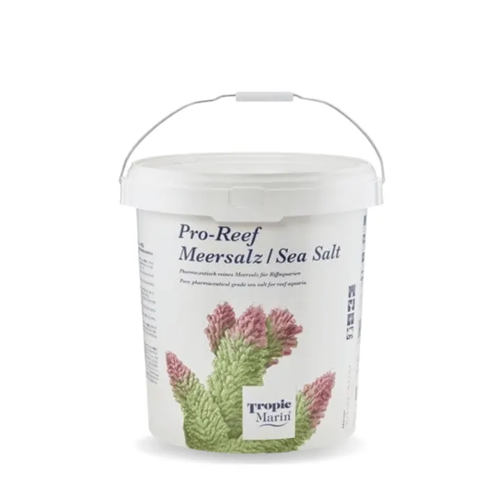

من مجموعة أكوا هافنAQUA HAVEN / THE COLLECTION
ملح تروبيك مارين برو ريف
ملح بحري احترافي لأحواض الريف بتركيبة متوازنة تدعم ثبات الكالسيوم والمغنيسيوم والقلوية، ومتوفّر بعدة أحجام.
٢٠ ر.س – ٣٥٠ ر.س
غير متوفر ضمن اللقطة المرجعية
مساحة للاكتشاف، قبل الاختيار.
واصل استكشاف المجموعة هذه معاينة للتصميم. الأسعار والخيارات والتوفر مرجعية وغير متزامنة؛ لا يمكن الطلب أو الدفع من هذه الصفحة.
A CLOSER LOOK
نظرة أقرب.
ملح Tropic Marin Pro-Reef مخصص لتحضير مياه أحواض الريف والمرجان، بتركيبة متوازنة تساعد على توفير بيئة بحرية مستقرة تناسب أنظمة SPS وLPS والأحواض المختلطة.
المميزات
- تركيبة مخصصة لأحواض الريف
- توازن مدروس للكالسيوم والمغنيسيوم والقلوية
- مناسب لتحضير مياه جديدة وللتغييرات الدورية
- ملائم لأنظمة الريف المتقدمة والأنظمة المختلطة
- متوفر بأحجام متعددة حسب الخيار المختار
طريقة الاستخدام
يُخلط مع ماء RO/DI النظيف حسب تعليمات الشركة المصنّعة حتى الوصول إلى الملوحة المطلوبة، ثم تُراجع الحرارة والملوحة قبل إضافة الماء إلى الحوض.
ملاحظة
الكمية اللازمة تختلف حسب حجم الماء والملوحة المستهدفة؛ اتبع تعليمات العبوة الخاصة بالحجم الذي اخترته.